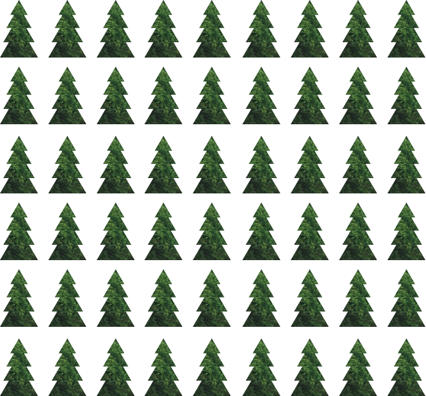
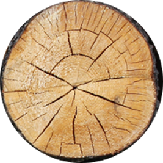

Ungefär hälften av jordens ursprungliga skogar har försvunnit.
Det mesta har skett under de senaste 50 åren.
1965
2015
Genom att bevara jordens artrika skogar kan vi minska klimatförändringarna.
Vad kan du göra för att rädda träd?
